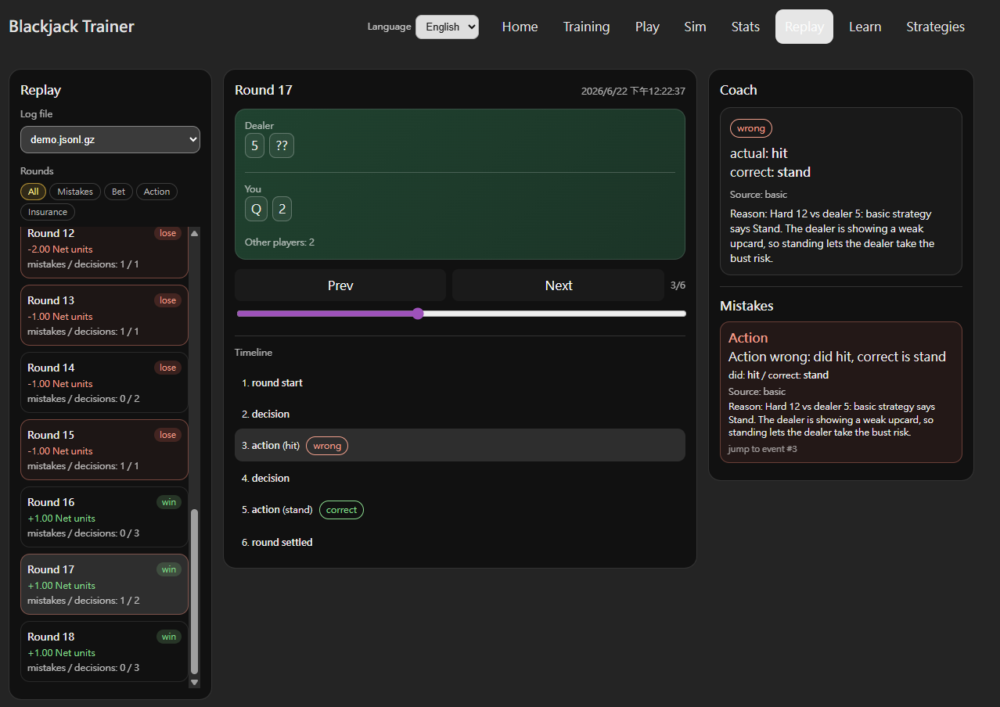

回放
Replay 回放 Play 模式的遊玩紀錄，提供整體統計、錯誤篩選與逐手 Timeline 細節查看，目的是讓使用者找出常犯問題後回到 Play 或 Training 修正。

遊玩紀錄統計
Replay 首頁上方整理目前保存的 Play 遊玩紀錄統計，包含：
- 總下注、淨利與 ROI
- 局數、手牌數、決策次數
- Win / Loss 結果
- 決策正確率
- 各算牌模式（Basic、Hi-Lo、KO、Red 7、FELT、Zen、Hi-Opt I、Omega II）的使用局數
- 下注錯誤、動作錯誤、Insurance 錯誤的數量
錯誤篩選
紀錄列表可用以下類別篩選，快速找出有問題的局：
- All：顯示所有紀錄
- Mistakes：任何類型的錯誤
- Bet Mistakes：下注未符合 Bet Ramp 設定的紀錄
- Action Mistakes：決策不符合策略的紀錄
- Insurance Mistakes：Insurance 判斷錯誤的紀錄
Timeline 逐手查看
點進單筆紀錄後，可進入詳細回放頁面：
- Summary：這一局的基本結果與整體狀態摘要。
- Mistakes：這一局出現的下注、動作或 Insurance 錯誤集中列出，方便快速看出問題類型。
- Timeline：逐步檢查牌局流程，點選不同時間點後，上方的 Table Snapshot 顯示當下牌桌狀況，下方的 Selected Event 顯示該事件的決策、結果與判斷細節。
Timeline 的設計重點是讓使用者從整局流程中找出自己常犯的錯誤，再回到 Play 或 Training 中針對性練習。